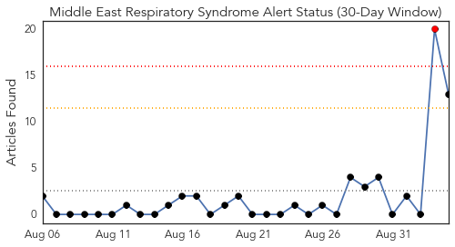
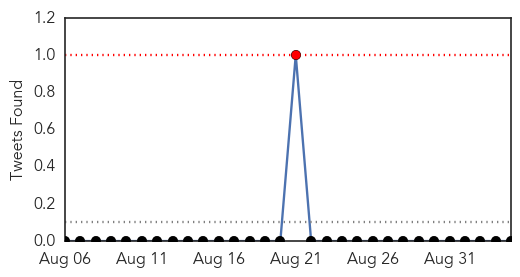
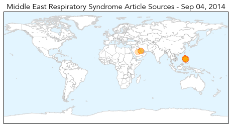
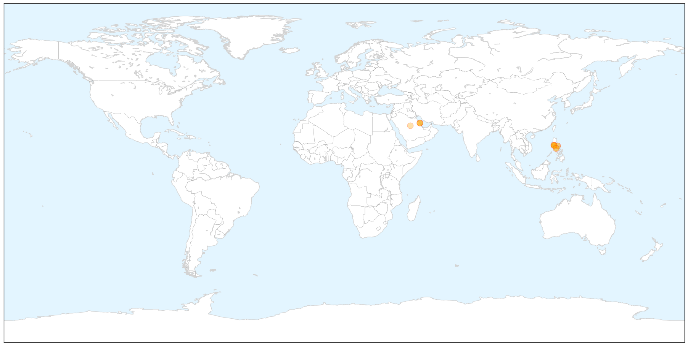
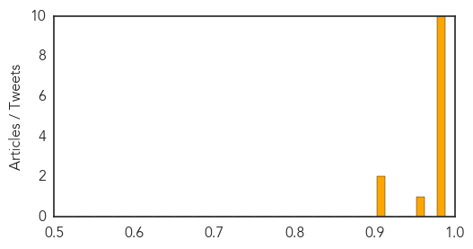
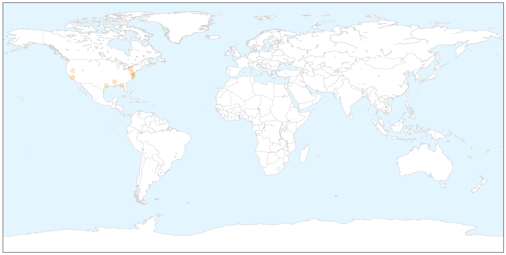

MERS
30-Day Web Trend
1 alerts, 0 warnings

30-Day Twitter Trend
1 alerts, 0 warnings

Article Locations

X

Article Confidences
Top Articles:
- 0.997
- Editorial: Prevention is better than cure
- 0.995
- Filipino nurse tests negative for MERS
- 0.994
- DOH: Nurse with MERS-Cov, husband under tight watch
- 0.991
- Filipino nurse from Saudi Arabia positive for MERS
- 0.989
- Filipino nurse from Saudi Arabia positive for MERS-Cov; isolated at Davao City hospital
- 0.988
- Filipina nurse positive of MERS-CoV isolated at SPMC in Davao City
- 0.987
- Filipino nurse from Saudi Arabia positive for Mers
- 0.984
- Family member of nurse from Saudi isolated for possible MERS-CoV infection
- 0.983
- Niece of Pinay nurse with Mers-Cov to undergo self-quarantine
- 0.983
- Suspect MERS case in SouthCot sent to Davao for isolation, testing
- 0.973
- 3rd person monitored for possible MERS-CoV
- 0.922
- Philippine Embassy issues advisory on MERS-CoV
- 0.904
- DOH tells airlines companies: Include contact numbers in booking flights
Top Tweets:
-
No tweets found for Sep 04, 2014
West Nile Virus
30-Day Web Trend
0 alerts, 0 warnings

30-Day Twitter Trend
0 alerts, 0 warnings

Article Locations

X

Article Confidences

Top Articles:
- 0.991
- West Nile Virus Infections in California at All-Time High (Map of Cases by County)
- 0.985
- Sentinel Chickens Test Positive for West Nile Virus in Delaware
- 0.968
- West Nile virus at highest level ever in California mosquitoes
- 0.966
- Sentinel chicken tests positive for West Nile virus in Delaware
- 0.837
- Third West Nile Virus death confirmed in Miss.
- 0.835
- West Nile strikes Tallahassee resident Bob Lotane
- 0.758
- 14th case of West Nile confirmed in Montgomery County
- 0.690
- No, Burning Man Was Not Infected With West Nile Virus
Top Tweets:
-
No tweets found for Sep 04, 2014